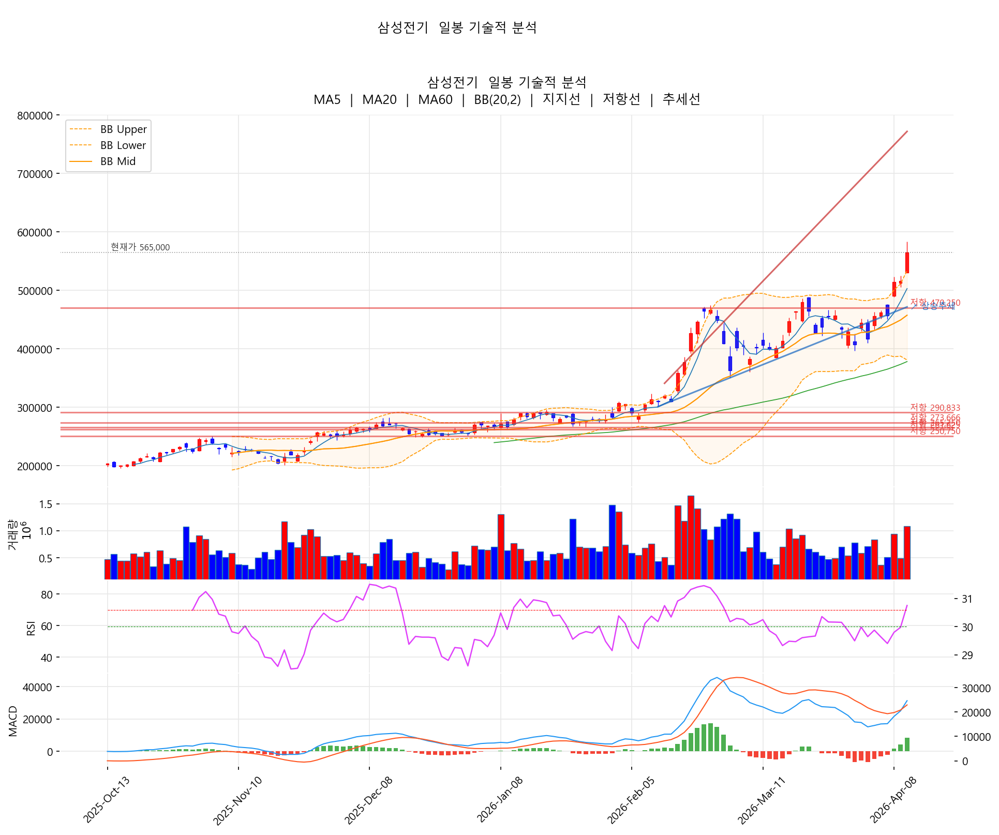
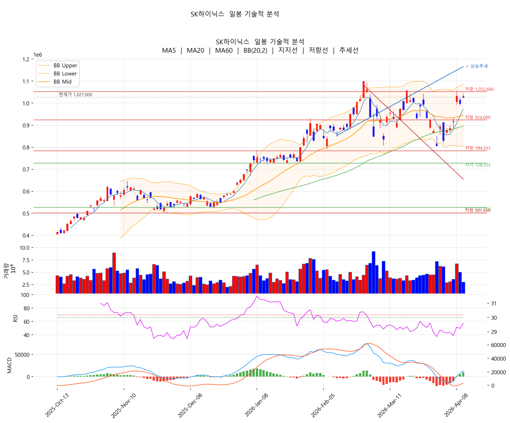
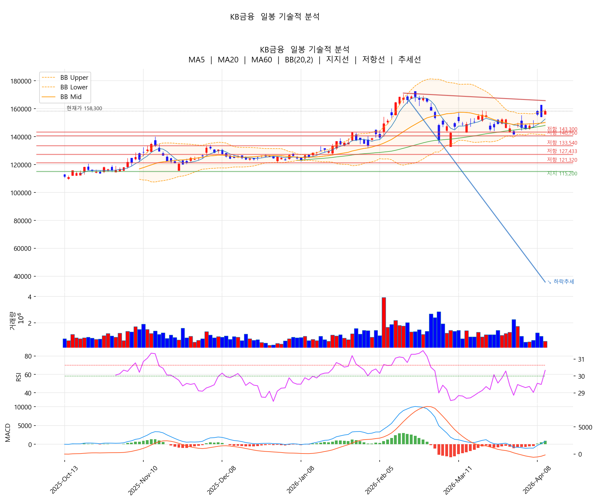
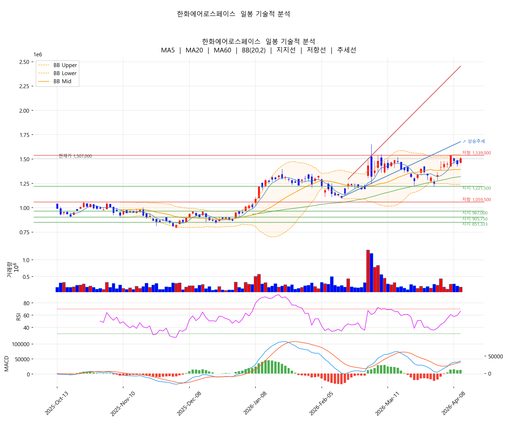
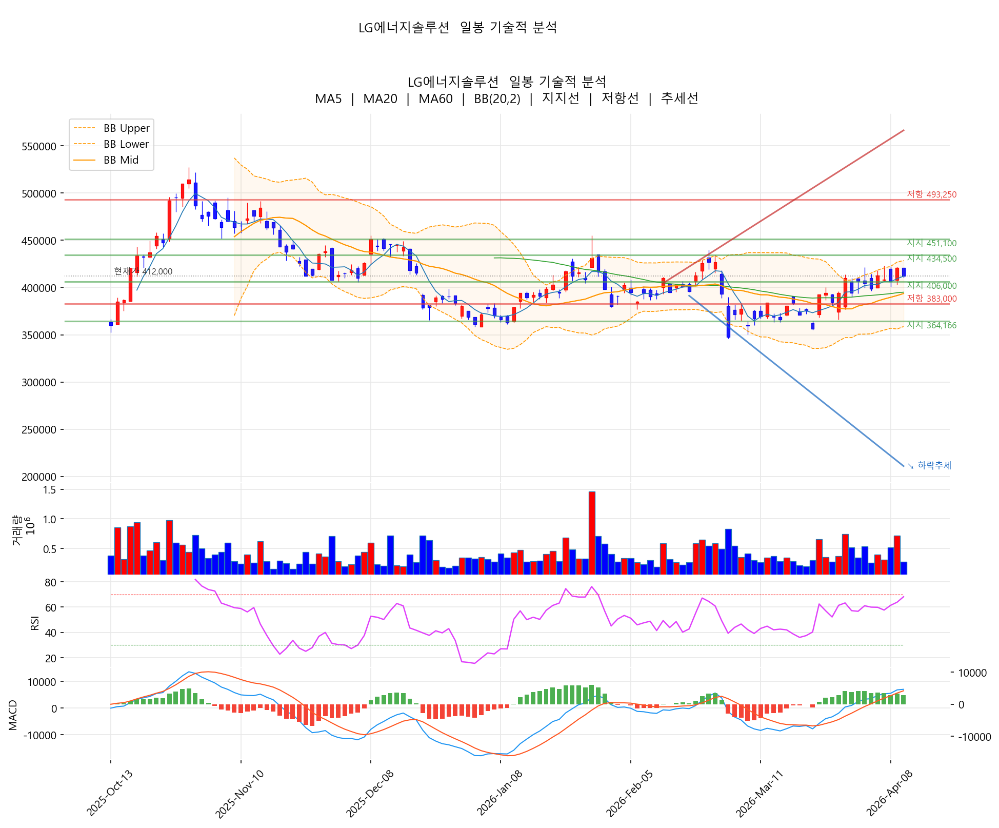

AI 부품·반도체·금융·방산이 동반 상승하며 시장을 끌어올린 하루. 반대로 2차전지(에코프로 그룹·LG엔솔)는 차익 실현 매물에 약세. 삼성전기가 +9.5% 폭등하며 단연 주목받았습니다.
| # | 종목 | 종가 | 등락률 | 5일 | 20일 |
|---|---|---|---|---|---|
| 1 | 삼성전기 | 565,000 | +9.50% | +23.90% | +41.07% |
| 2 | SK | 354,000 | +4.27% | +13.28% | +6.95% |
| 3 | 한화에어로스페이스 | 1,507,000 | +3.86% | +4.00% | +1.28% |
| 4 | HMM | 21,650 | +3.84% | +7.98% | +2.85% |
| 5 | 고려아연 | 1,581,000 | +3.60% | +6.54% | -2.89% |
| 6 | SK하이닉스 | 1,027,000 | +2.91% | +17.24% | +12.86% |
| 7 | KB금융 | 158,300 | +2.66% | +8.80% | +6.31% |
| 8 | 신한지주 | 98,700 | +2.17% | +7.52% | +8.70% |
| 9 | 삼성전자우 | 140,400 | +1.96% | +12.86% | +4.85% |
| 10 | 삼성생명 | 234,500 | +1.96% | +6.11% | +8.56% |
| 종목 | 종가 | 등락률 | 5일 | 20일 |
|---|---|---|---|---|
| 알테오젠 | 361,500 | -2.30% | -1.09% | 0.00% |
| 에코프로비엠 | 201,500 | -2.18% | +4.62% | +5.33% |
| LG에너지솔루션 | 412,000 | -2.14% | +3.39% | +11.65% |
| 에코프로 | 146,400 | -1.68% | +3.46% | -2.72% |
| 기아 | 149,000 | -1.00% | -0.80% | -9.31% |
| 셀트리온 | 199,700 | -0.89% | +2.25% | -2.82% |
| SK텔레콤 | 93,000 | -0.85% | +14.96% | +24.00% |
핵심: HBM·AI 서버 부품 사이클은 여전히 살아 있고, 부품주(삼성전기)로 매수세가 옮겨붙는 모습.
각 차트에는 이동평균선(MA5/20/60), 볼린저밴드(20,2), 지지/저항선, 추세선, RSI(14), MACD가 함께 그려져 있습니다.

차트 해석: 완벽한 정배열(MA5 > MA20 > MA60). 차트 좌측의 횡보 박스(20만~25만원)를 지난 2월 강하게 돌파한 이후 한 번도 20일선을 깨지 않고 올라온 전형적인 상승 추세입니다. 다만 종가가 볼린저 상단(533,876)을 +5.8% 초과하며 통계적으로 보면 변동성 폭증 구간 — RSI 72.8까지 가세해 단기 과열 시그널이 명확합니다. 거래량은 20일 평균의 1.57배로 매수세가 살아 있지만, 차익 실현 매물 출회 가능성이 높아 추격보다 눌림목 대기가 정석.
📍 핵심 가격대: 지지 502K(MA5) → 457K(MA20) → 433K(이전 박스 상단). 저항 583K(60일 신고가).

차트 해석: 5종목 중 가장 건강한 추세. RSI 57.1로 과열 신호가 없고, MA5/20/60 모두 정배열을 유지한 채 완만한 우상향 추세선이 자리잡혔습니다. 볼린저밴드 상단(1,086,873)까지는 약 5.8%의 추가 여유가 있어 단기 매수세 유입 시 전고점(1,099,000) 돌파 시도가 충분히 가능합니다. 거래량은 0.69x로 다소 가벼운 편 — 본격적인 추세 가속에는 거래량 동반 확인이 필요합니다.
📍 핵심 가격대: 지지 972K(MA5) → 946K(MA20) → 896K(MA60, 강한 지지). 저항 1,086K(BB 상단) → 1,099K(60일 신고가).

차트 해석: 정배열은 유지하지만 MA5(152K)·MA20(150K)·MA60(148K)이 매우 좁은 간격으로 수렴 — 이는 박스권 횡보 후 방향성 결정 직전 구간임을 시사합니다. 오늘 종가가 볼린저 상단(159,079)에 95.6%까지 근접해 단기 저항 테스트 중. MACD가 막 골든크로스를 발생시킨 점은 긍정적이나 거래량이 0.56x로 약해 강한 돌파보다는 박스 상단 횡보 가능성이 더 높음.
📍 핵심 가격대: 지지 152K(MA5) → 150K(MA20). 저항 159K(BB 상단) → 172K(60일 고점).

차트 해석: MA5/20/60 정배열, MACD 골든크로스 모두 상승 추세 유효를 가리킵니다. RSI 66.3은 과열 직전 단계로 추가 상승 여력이 남아 있고, 볼린저 상단(1,549,919)까지는 약 2.9% 여유. 다만 60일 고가(1,655,000)와는 약 9% 갭이 있어 이전 고점 회복까지의 여정이 남아 있습니다. 거래량 0.88x는 미지근한 수준 — 본격 상승 전환에는 거래량 동반이 필요.
📍 핵심 가격대: 지지 1,486K(MA5) → 1,393K(MA20). 저항 1,549K(BB 상단) → 1,655K(60일 신고가).

차트 해석: 유일하게 정배열이 깨진 종목. MA20(393,625)이 MA60(395,025)을 살짝 하회 — 이는 중기 추세가 회복 중이지만 아직 완전한 정배열에 도달하지 못한 상태입니다. RSI 68.2는 과열 직전이고, 오늘 -2.14% 음봉으로 마감해 단기 차익 실현이 시작된 신호일 수 있습니다. MACD는 골든크로스 상태이지만, 거래량 0.69x에 음봉이라면 약한 매도 우위로 해석. MA20과 MA60 사이의 좁은 간격이 변곡점이 될 가능성.
📍 핵심 가격대: 지지 394K(MA20·MA60 클러스터) → 359K(BB 하단). 저항 428K(BB 상단) → 455K(60일 고점).
20일 +41%의 폭등 종목. 강한 추세지만 단기 과열 구간. 565,000원에서 20일 고점 583,000원이 1차 저항.
| 🟢 분할 매수 | 530,000~545,000원 (조정 시) |
| 🎯 1차 목표 | 600,000원 |
| 🎯 2차 목표 | 650,000원 |
| 🔴 손절 | 495,000원 (-7%, 20일선) |
주의: RSI 과열 구간 진입 가능성 高. 추격보다 눌림목 매수가 정석.
| 🟢 진입 | 990,000~1,010,000원 |
| 🎯 1차 목표 | 1,080,000원 (전고점 돌파) |
| 🎯 2차 목표 | 1,150,000원 |
| 🔴 손절 | 950,000원 |
| 🟢 진입 | 154,000~156,000원 |
| 🎯 1차 목표 | 165,000원 |
| 🔴 손절 | 145,000원 |
20일 등락률 +1.28%로 박스권 상단. 150만 원 돌파 후 추가 모멘텀 확인 필요.
20일 +11.65%인데 오늘 -2.14%. 단기 고점 형성 시그널. 400,000원 지지 확인 후 재진입 검토.
✅ 강세 테마: AI 부품(삼성전기) > HBM(SK하이닉스) > 금융 > 방산 > 해운
❌ 약세 테마: 2차전지(에코프로 그룹·LG엔솔) > 자동차 > 통신
🔄 자금 이동: 2차전지 → AI 부품 / 금융주
🎯 최선호: 삼성전기(눌림목), SK하이닉스, KB금융